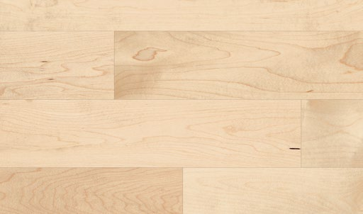
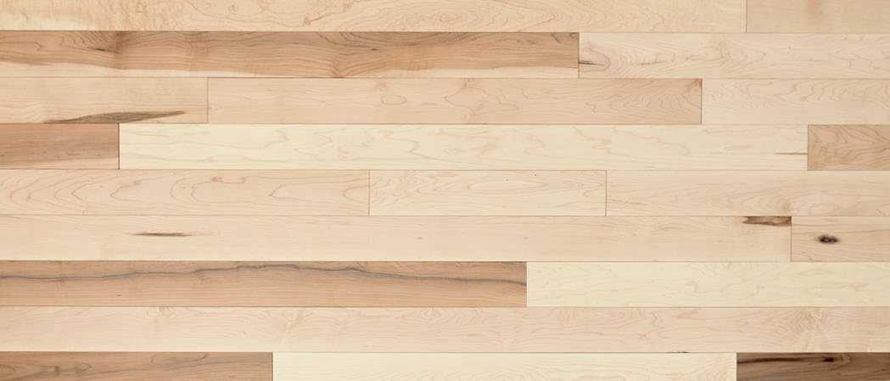
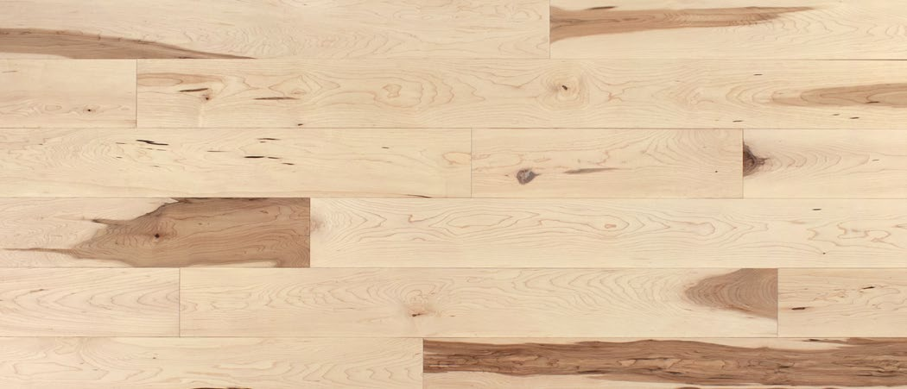
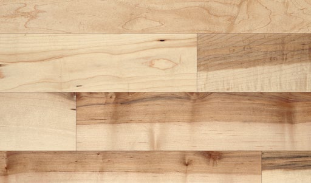

Select & Better

Maple — Select & Better
Colour (prefinished): Low variation, white to light brown.
Colour (unfinished): Low variation, light beige to medium brown.
Knots: Sound knots 1/8 in (3 mm) and less accepted.
Mineral streaks: Sound streaks less than 1/8 in x 4 in accepted.
Other: Light-coloured bird’s eye maple accepted.
Pacific (mix of Select & Better + Instinct)

Maple — Pacific
Colour: Pronounced variation, light brown to dark brown.
Knots (prefinished): All sound knots accepted. Unsound knots 3/8 in (10 mm) and less accepted, artificially minimized.
Knots (unfinished): All sound knots accepted. Unsound knots 1/8 in and less accepted.
Mineral streaks (prefinished): All sound streaks accepted. Unsound streaks under 1/8 in x 4 in accepted, artificially minimized.
Mineral streaks (unfinished): All sound streaks accepted.
Other (prefinished): Bird’s-eye maple accepted. Wormholes accepted, artificially minimized.
Other (unfinished): Bird’s-eye maple and wormholes accepted.
Instinct

Maple — Instinct
Colour: Pronounced variation, light brown to dark brown.
Knots & streaks: Same allowances as Pacific (see above).
Other: Bird’s-eye maple accepted. Wormholes accepted (artificially minimized on prefinished).
Heritage

Maple — Heritage
Colour: Pronounced variation, light brown to dark brown.
Knots: Sound and unsound knots up to 1 in (25 mm) accepted; unsound artificially minimized.
Mineral streaks: All sound and unsound streaks accepted; unsound artificially minimized.
Other: All natural and mechanical marks accepted (checks, burn marks, sticker marks) as long as board is fit for installation. Cracks and wormholes accepted, artificially minimized. Dark bird’s-eye maple accepted. Slight variations in end squareness or width may occur.